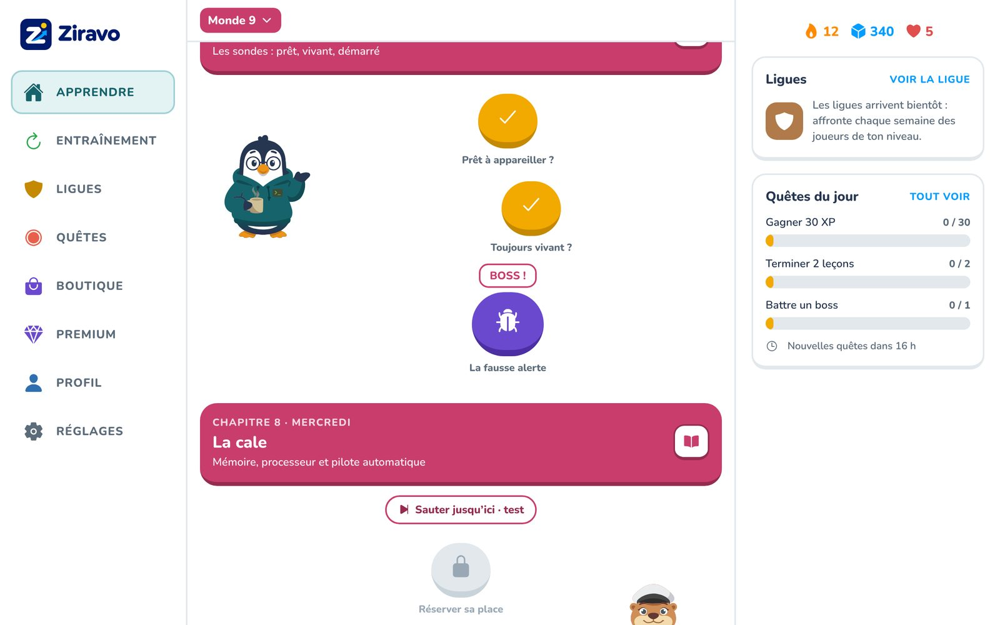
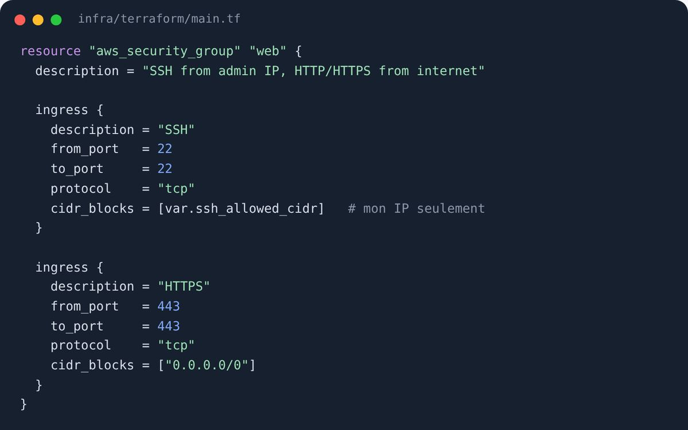
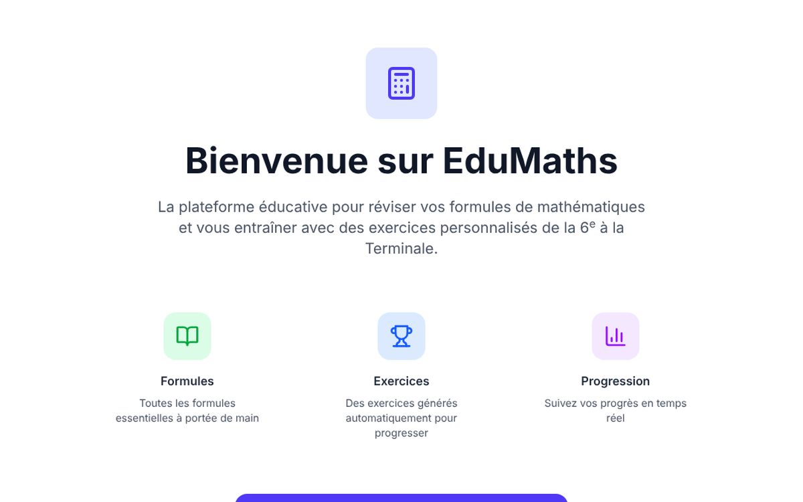
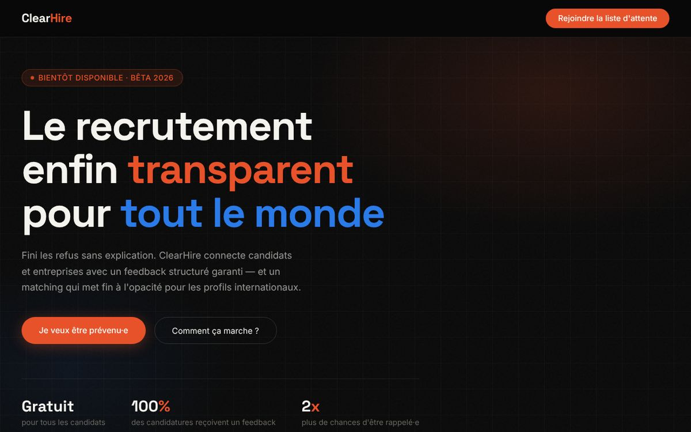
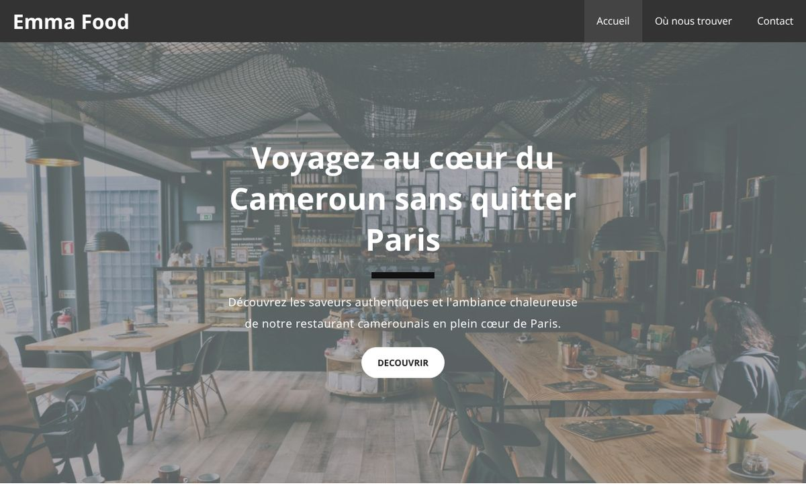
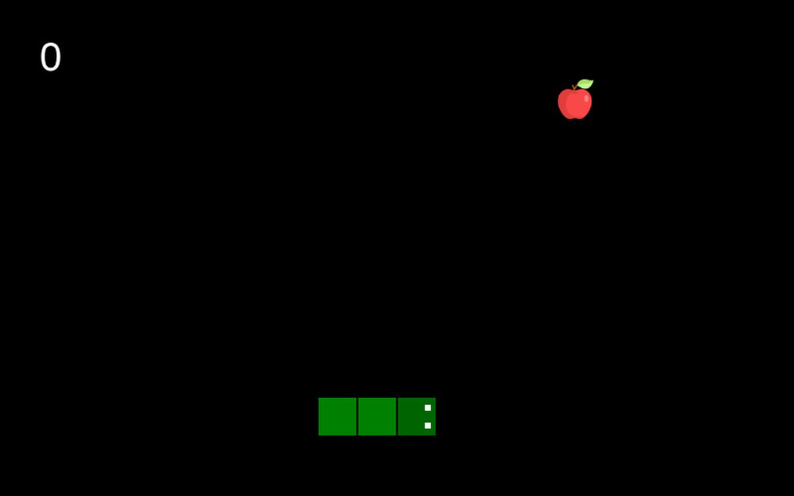

Élève ingénieur · INP-ENIB, Brest
Je construis des infrastructures qui tiennent,
et j’apprends à les sécuriser.
Linux, conteneurs, Kubernetes, déploiement continu : j’héberge et j’exploite mes propres services, du serveur à la supervision. La sécurité et le DevSecOps sont les domaines dans lesquels je veux me spécialiser.
- Kubernetes en productionk3s sur un serveur que j’administre
- CI/CD sécuriséedépendances, code et images analysés à chaque modification
- Exploitationsauvegardes chiffrées, supervision Prometheus et Grafana
01 · ÉTUDES DE CAS
Projets phares
Quatre projets racontés en détail : la situation, ma mission, ce que j’ai fait, et les résultats mesurés. Chacun avec une vidéo et son architecture.
 01
01Infrastructure et DevSecOps
Dilane Shop
D’une boutique écrite en quatre jours à un service en production sur Kubernetes, analysé, testé, supervisé et sauvegardé.
- 9 → 149 tests
- 30 failles corrigées
- k3s · HTTPS
 02
02Sécurité des données
Kalinoa
Une application de rendez-vous pour indépendants, où la base de données elle-même empêche un professionnel de voir les clients d’un autre.
- 1 798 vérifications de sécurité
- Sauvegarde chiffrée

03Simulation Linux et CI
Ziravo
Apprendre les métiers de la tech en jouant, avec un terminal Linux simulé dans le navigateur.
- 539 leçons
- 5 662 exercices vérifiés
 04
04IA encadrée et qualité
AI Software Factory
Huit agents IA mènent un projet de l’idée au code validé. L’IA propose, le moteur vérifie avec des preuves, un humain décide.
- 9 portes de validation
- 1 314 tests
02 · AUTRES PROJETS
Autres projets

Afrolink
Première version de la boutique, sur AWS EC2. Infrastructure décrite en Terraform : instance, groupe de sécurité (SSH depuis mon adresse seulement), IP fixe. Déploiement par GitHub Actions après les tests.
Django · Terraform · AWS
EduMaths
Révisions de mathématiques du collège au lycée, mise en production sur AWS EC2 : CI/CD GitHub Actions, HTTPS, fusions uniquement par pull request relue.
React · Supabase · AWS
ClearHire
Page d’accueil avec liste d’attente : une fonction sans serveur enregistre l’inscription et envoie le courriel de confirmation.
Vercel Functions · Brevo
Restaurant camerounais
Site vitrine d’un restaurant, adapté aux téléphones.
HTML · CSS
Snake
Jeu dans le navigateur : collisions, score, accélération progressive.
JavaScript · CanvasEt aussi
- Emma Food, recettes de cuisine React
- Blog, avec une API REST JavaScript
- Liste de tâches React
- Dilane Immobilier, site vitrine HTML · CSS
- Morpion et jeu de devinette, en console Java
03 · COMPÉTENCES
Compétences
Systèmes
Linux (administration, services systemd, journaux, paquets), stockage (partitions, LVM, RAID, sauvegardes), Bash
Cloud et conteneurs
Docker, Kubernetes / k3s, VPS OVH, AWS EC2, Terraform, Cloudflare, Supabase, Vercel
Réseau
DNS, HTTPS / TLS, reverse proxy (ingress-nginx), analyse de trafic (Wireshark)
Sécurité
Durcissement, contrôle d’accès aux données, CI/CD sécurisée (pip-audit, Bandit, Trivy, npm audit), gestion des secrets (SOPS), OWASP, OSINT
Exploitation
GitHub Actions, supervision Prometheus et Grafana, alertes, sauvegardes chiffrées, tests automatisés
Développement
Python, TypeScript, Java, SQL, C++ · Django, Next.js, Spring Boot · PostgreSQL
04 · PARCOURS
Parcours
- 2026
Cybersécurité pratique
CTF académique (OSINT, sécurité web, DNS) et entraînement sur Root-Me (Wireshark, hashcat).
- 2025 - 2027
Cycle ingénieur, INP-ENIB (Brest)
Informatique et électronique. Cybersécurité, méthodologie des systèmes d’information, intelligence artificielle.
- 2025
Stage assistant ingénieur, ENIB
Simulation temps réel d’une corde de guitare en C++ et Python, moins de 10 ms de latence visée.
05 · CONTACT
Travaillons ensemble.
Une question sur un projet ou une opportunité ? Écris-moi.